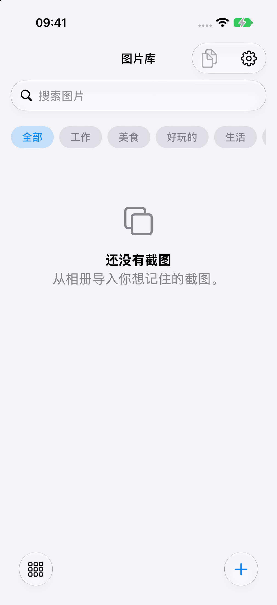
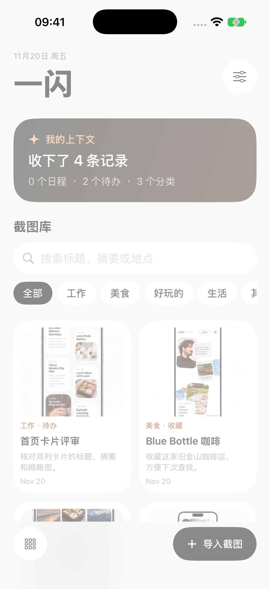

An iPhone app for screenshots
Find what you
screenshotted.
Turn screenshots from your photo library into searchable records. Find the café you saved, review a task, or add a dated event to Calendar.
Watch the walkthrough
A library you can search

Tap + to choose images from Photos.


An earlier build showing sample titles, categories, and summaries.
See the library in action
A 15-second walkthrough made from app screenshots, with English captions. It shows where to import screenshots and how saved records appear in the library.
Open the MP4Get started
Import from Photos
Tap + in the screenshot library and select up to 12 images. Review the selection and start recognition.
Choose how to recognize text
Yishan uses on-device Apple Vision OCR. For richer summaries and structured records, open Settings, choose TeamoRouter or Alibaba Cloud Bailian, and enter your own API key. If a cloud request fails or a key is missing, the app falls back to OCR when it can read text.
Review and use the result
Search saved records by title, summary, or place. Open a record to review or edit the extracted information. Save a dated event to Calendar or a task to Reminders. You can also copy your library as text to use in another app.
Set up optional screenshot automation
Enable automatic collection in Yishan Settings and grant Photos and notification access. In Apple Shortcuts, create a Screenshot automation, choose Photos as the save location, select Run Immediately, and add Yishan’s Summarize New Screenshot action (摘要新截图). Setup and background behavior depend on the iOS version and permissions.
Data and permissions
Yishan stores its records and previews on the device and keeps API keys in the iOS Keychain. A configured cloud recognition provider receives the selected image and readable embedded metadata during recognition. Calendar, Reminders, Photos, and notifications use iOS permissions.
Yishan is a SwiftUI project. The Xcode project targets iOS 17 or later. The interface shown in the screenshots is in Chinese.